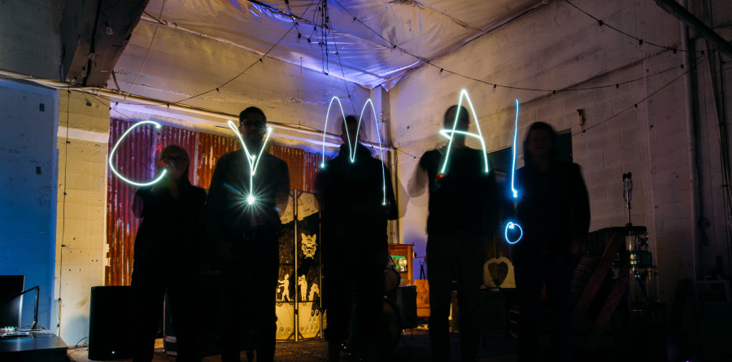

Join the CymaSpace Board of Directors – Strategic Roles with Flexible Commitment
CymaSpace is seeking passionate and experienced professionals to join our Board of Directors. We understand that your time and resources are valuable, and we offer flexible, strategic roles that allow you to make a significant impact without overwhelming your schedule.
Our Mission:
CymaSpace is dedicated to expanding the reach of the arts through accessible technology. We create inclusive experiences that bridge the gap between artists, audiences, and communities, with a special focus on the Deaf and Hard of Hearing (DHH) communities.
What We’re Looking For:
We are currently seeking individuals with expertise in:
- Fundraising: Provide strategic advice on major campaigns or specific initiatives, with a focus on high-impact, time-limited involvement.
- Legal Expertise: Offer guidance on key legal matters such as nonprofit governance and social enterprise, with a focus on high-level advice.
- Connections within the Deaf and Hard of Hearing Communities: Help shape our outreach and programs, with opportunities to lead specific, short-term projects.
Strategic Roles and Flexible Commitment:
- Advisory Role: Contribute your expertise in a strategic, high-level capacity.
- Time-Limited Projects: Engage in specific projects with clear goals and timelines.
- Board Giving: As part of your commitment, we ask that you consider a financial contribution that is meaningful to you. We value all forms of support, and our board giving approach is flexible, reflecting the diverse financial capacities of our members. Fundraising Support: Whether through personal donations or leveraging your network, your involvement in fundraising helps us achieve our mission.
Why Join Us?
- Impact: Play a key role in shaping the future of accessible arts and technology.
- Networking: Connect with other leaders in the arts, accessibility, and technology sectors.
- Recognition: Receive public acknowledgment for your contributions and be part of a respected, innovative nonprofit.
FAQ
How much time is required to serve on the Board?
Board members are asked to commit approximately 1 hour per month for Board meetings, plus attending 2-3 community events per year. The term is for one year, with the option to renew.
What kind of financial contribution is expected from Board members?
Board giving is flexible and designed to fit within your means. While the capacity to contribute varies, previous Board members have typically contributed between $10-100 per month or made a one-time contribution per term. We value every contribution, whether it’s financial or through your time and expertise.
What support does CymaSpace offer to its Board members?
- Orientation and Onboarding: New Board members receive a comprehensive orientation and onboarding materials to ensure they have a clear understanding of CymaSpace’s mission and their role on the Board.
- Mentorship and Peer Support: New for 2024-2025, We plan to establish a Board buddy system, pairing new members with experienced mentors, and provide opportunities for peer networking and collaboration.
- Professional Development Opportunities: Board members have access to workshops, training sessions, and industry conferences that enhance their governance skills and knowledge.
- Operational and Administrative Support: CymaSpace staff are available to assist with scheduling, preparing materials, and other administrative tasks. Board members also have access to Board of Directors Shared cloud storage for easy access to all necessary documents.
- Regular Check-Ins and Feedback: We conduct bi-annual check-ins to ensure Board members feel supported, and we welcome feedback to continually improve the Board experience.
- Recognition and Appreciation: Board members shall be publicly recognized for their contributions and invited to special gatherings to celebrate their service.
Call to Action
Ready to make a difference?
Let’s explore how your expertise and resources can fit into our flexible roles. To express your interest, please contact us for an initial conversation at with the subject “CymaSpace Board of Directors Inquiry”.